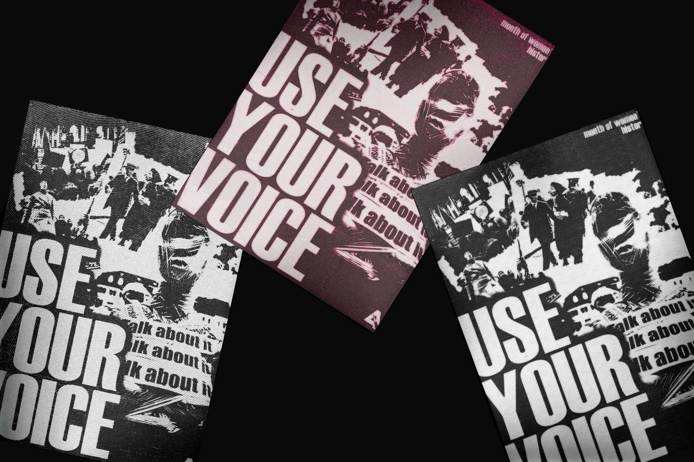
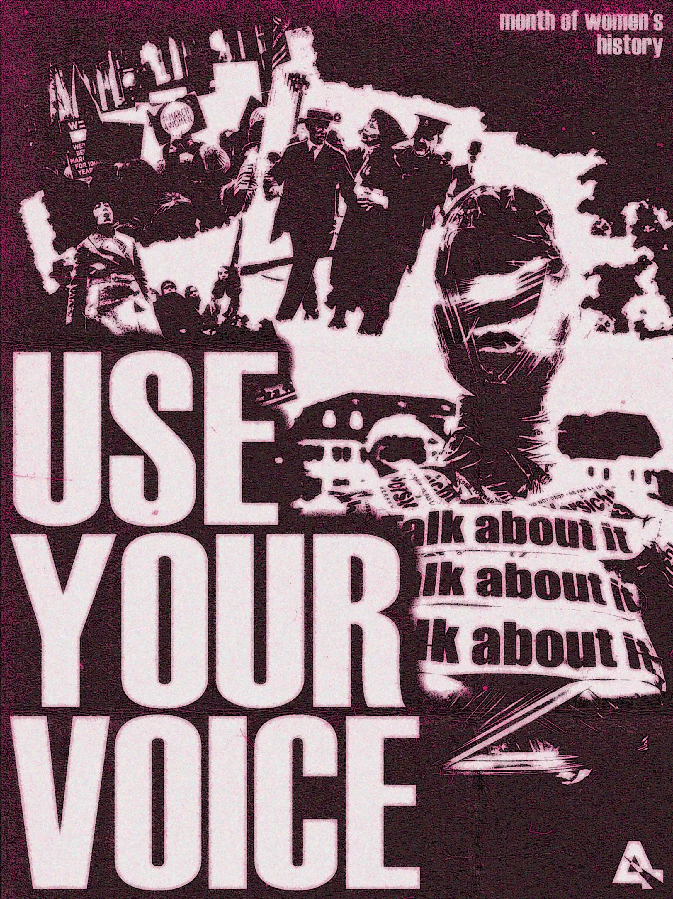
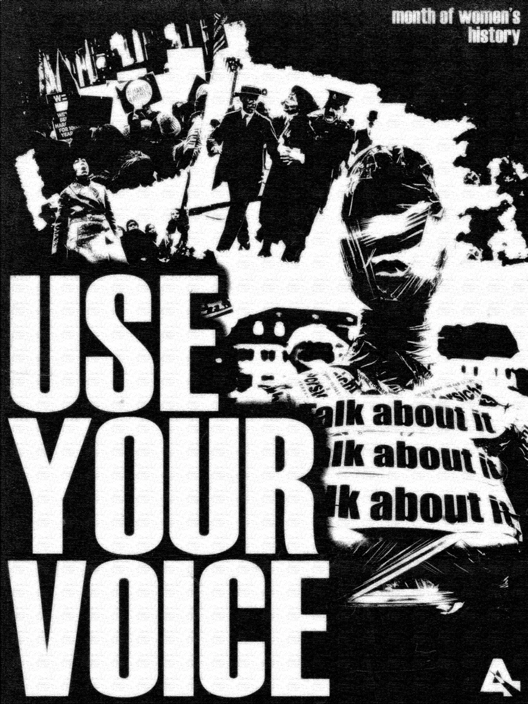

USE YOUR VOICE
Постер посвященный Международному женскому дню и феминизму

ЗАДАЧА
Создать визуальное высказывание к Международному женскому дню, которое напоминает о продолжающейся борьбе за права женщин, свободу самовыражения и автономию. Передать идею о том, что женский голос подавляют, но именно он становится инструментом сопротивления.
РЕШЕНИЕ
Соединила архивные фотографии протестов, феминистскую символику и бруталистскую типографику. Крупный заголовок USE YOUR VOICE стал центральным элементом композиции. Коллаж, грубые текстуры, контрастные цвета и масштабный гротеск создают ощущение срочности и визуального протеста.
РЕЗУЛЬТАТ
Создала концептуальный постер к Международному женскому дню, объединяющий исторический контекст женского движения и современный визуальный язык активизма. Работа стала самостоятельным графическим высказыванием о праве женщин быть услышанными, говорить открыто и определять собственную жизнь.
Постер посвящён Международному женскому дню и продолжающейся борьбе за права и свободы женщин. В основе концепции — противоречие между навязанным молчанием и возможностью сопротивления через собственный голос. Архивные изображения протестов связывают исторические движения за равенство с современным активизмом, а образ женщины с ограниченным голосом становится метафорой системного подавления. Это не поздравительный плакат, а призыв к действию.
Сформулировала центральное сообщение: молчание навязано, но голос — сила. Выбрала визуальную метафору подавления женского голоса и противопоставила ей прямой призыв к действию.
Исследовала архивную протестную фотографию, феминистскую символику и визуальный язык уличных плакатов. Экспериментировала с коллажем, слоями изображений и взаимодействием текста с фотографией.
Использовала крупный конденсированный гротеск, контрастную композицию, грубые текстуры и насыщенные цветовые сочетания. Типографика стала не только носителем сообщения, но и инструментом визуального давления.
Собрала композицию вокруг фразы USE YOUR VOICE, объединив протестную фотографию, архивные материалы и графические элементы в цельное визуальное высказывание. Постер работает как призыв, который невозможно игнорировать.

